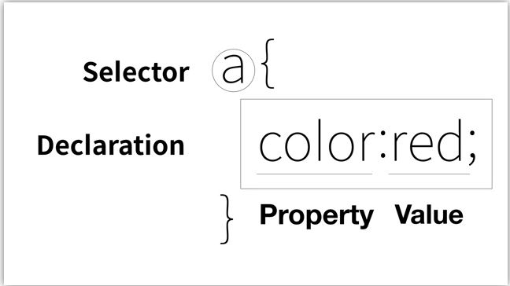
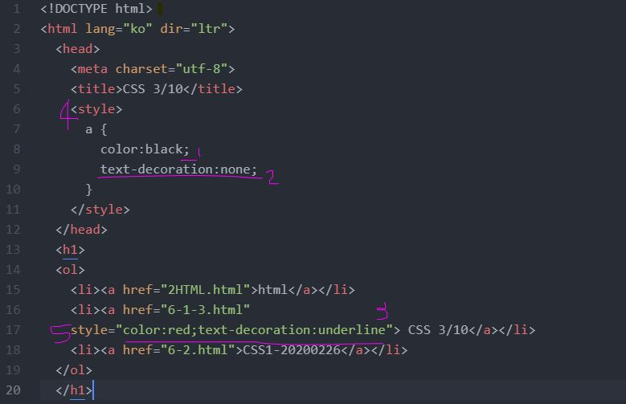

3. 선택자와 속성 강의를 보시려면 여기를 눌러주세요.
3-1. 강의 포인트 :
선택자와 속성은

이 그림에서 잘 나타난다.
selector는 선택자로 어떤 그룹을 묶을 것인지를 알려준다.
declaration은 선언으로, 어떤 효과를 주는지 해당한다. 그래서 효과라고도 말한다.
'color'는 property인 속성, 'red'는 속성의 값인 value라고 부른다.
이를 이해하게 되면 다른 declaration(효과)를 보더라도 인지하고 검색할 수 있도록 해준다.
3-2. 위 목차룰 보면 현재 해당하는 목차 링크색만 다르다는 것을 알 수 있다.
3-3. 코드 이미지

3-3-1. ';'의 역할 : 하나의 선택자에 대해 여러 개의 효과를 넣을 수 있는데 이를 구분을 해주는 역할을 한다.
3-3-2. 태그에 적용 받는 목차에 밑줄을 없애주는 효과이다.
3-3-3. 허나 예외로 넣고 싶다면 이렇게 속성을 넣어줄 수 있다.
3-3-4. style ① : 이 효과를 누구에게 줄 것인가 = selector(선택자)
3-3-5. style ② : a 안에 직접 효과를 넣어 속성의 값으로 지정해주었다.
.................이는 css의 문법에 따라 해석하여 태그를 적용한다는 뜻이다.
.................이는 html의 속성이다. 허나 반드시 style의 속성이다.